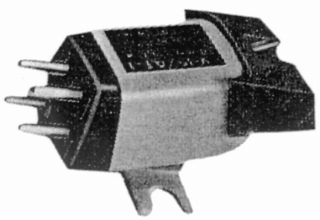

V-15/AT-2

■価格 6,900円■発電方式 MM型■出力電圧 7.5mV■針圧 1〜5g■再生周波数帯域 20-20,000Hz■チャンネルセパレーション 35dB■チャンネルバランス■コンプライアンス■負荷抵抗 ■直流抵抗 ■インピーダンス ■針先 0.7mil■自重 5g■交換針 D1507AT(3,200円)■発売 〜1970年■販売終了 1971〜72年頃■備考 価格は1970年頃のもの
ピカリングのインデックスヘ